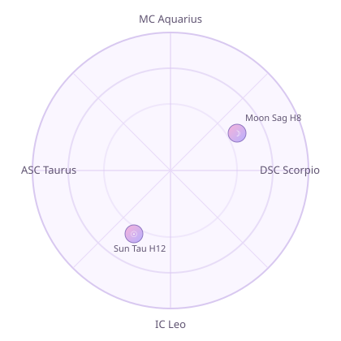
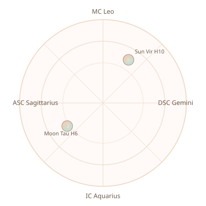

Astrolua • Signature Love Reading
Dailton + Felipe
Dailton Ferandes Rabelo Junior
04/29/1994 • 07:20 AM
Jussara, Goiás, Brazil
Felipe Batista de Sousa
09/13/1995 • 10:24 AM
Goiânia, Goiás, Brazil
A static, deep-chart romance profile with your full core placements and actionable relationship guidance.
Astrology API v3 powered
Synastry-centered
Romance roadmap
Cosmic headline
Astrology API v3 rates this as good overall compatibility (0.625) with a strong destiny-level connection
signature in key dynamics. Taurus + Virgo still gives long-term grounding, while your synastry adds depth, chemistry, and
emotional pull.
Dailton natal wheel

Ascendant Taurus • MC Aquarius • Sun in Taurus (House 12) • Moon in Sagittarius (House 8)
Felipe natal wheel

Ascendant Sagittarius • MC Leo • Sun in Virgo (House 10) • Moon in Taurus (House 6)
Planets + houses (API data)
Dailton
- Sun: Taurus 8.87° (House 12)
- Moon: Sagittarius 28.97° (House 8)
- Mercury: Taurus 7.70° (House 12)
- Venus: Gemini 3.85° (House 1)
- Mars: Aries 11.35° (House 11)
- Jupiter: Scorpio 9.91° (House 6)
- Saturn: Pisces 10.05° (House 10)
- ASC/MC: Taurus 18.64° / Aquarius 18.85°
- House cusps: H1 Taurus • H4 Leo • H7 Scorpio • H10 Aquarius
Felipe
- Sun: Virgo 20.29° (House 10)
- Moon: Taurus 13.56° (House 6)
- Mercury: Libra 16.62° (House 11)
- Venus: Virgo 26.71° (House 11)
- Mars: Scorpio 4.16° (House 12)
- Jupiter: Sagittarius 8.09° (House 1)
- Saturn: Pisces 21.42° (House 4)
- ASC/MC: Sagittarius 2.37° / Leo 21.44°
- House cusps: H1 Sagittarius • H4 Aquarius • H7 Gemini • H10 Leo
Compatibility diagnostics (API)
Dynamic profile
Harmonious Flow
Harmony: 71.4% • Growth tension: 28.6%
“This connection balances ease and growth opportunities.”
Connection type
Intense Connection
Compatibility-score endpoint: 16.0
High significance — strong destiny-level connection, balanced dynamic.
Life-area matrix (detailed)
Communication & Understanding50.2%
Love & Romance60.7%
Passion & Sexuality63.9%
Emotional Security60.0%
Shared Values & Goals60.3%
Adventure & Growth59.8%
Stability & Commitment64.0%
Creativity & Fun58.2%
Home & Family57.2%
Independence & Freedom67.1%
Spiritual Connection95.0%
Transformation & Healing70.6%
Top strengths from synastry
- Moon sextile Mean Node: emotional needs and life direction cooperate.
- Moon trine Mean South Node: natural emotional familiarity and ease.
- Uranus trine Venus: exciting love that still preserves freedom.
- Uranus conjunction Uranus: similar innovation/change rhythm.
- Uranus sextile Pluto: regenerative growth through shared evolution.
Top growth edges from synastry
- Moon square Venus: feelings and affection style can mismatch under stress.
- Moon square Chiron: emotional triggers may hit old wounds.
- Moon opposition Mean Lilith: shadow dynamics need gentle honesty.
- Saturn square Jupiter: caution vs expansion requires negotiation.
- Uranus square Mean Node: unpredictability can challenge long-term direction.
High-impact aspects (quick view)
Sun ☌ MoonOrb 4.69 • Harmonious
Mars ☌ ErosOrb 0.27 • Intense
Uranus △ VenusOrb 0.36 • Harmonious
Pluto ✶ VenusOrb 0.49 • Harmonious
Venus ☍ JupiterOrb 4.23 • Mixed
Moon △ Mean South NodeOrb 0.73 • Harmonious
Birth profile
Dailton: Sun Taurus • Moon Sagittarius • Rising Taurus • Venus Gemini • Mars Aries
Felipe: Sun Virgo • Moon Taurus • Rising Sagittarius • Venus Virgo • Mars Scorpio
Core dynamic
- Sun pair: Earth + Earth foundation (loyal, practical, stable)
- Moon pair: Sun–Moon conjunction appears in your key synastry links
- Venus/Mars: Love and attraction are active, with both harmony and growth tension
Communication
50%
Moderate compatibility — this is the main area to improve intentionally.
Love & Romance
61%
Good romantic support between the two charts.
Passion & Sexuality
64%
Good physical chemistry with strong attraction potential.
Synastry focus (static interpretation)
Key API aspect: Sun ☌ Moon
The API flags Dailton’s Sun conjunction Felipe’s Moon as one of the strongest links: identity and emotional
needs naturally reinforce each other, creating a nurturing core bond.
Key API aspect: Venus △ Venus
Your chart includes a Venus trine Venus pattern: values and affection styles can align beautifully when you
prioritize appreciation and emotional reassurance.
Deep interpretation (from full synastry report)
Relationship synthesis
The API synthesis rates your bond as Overall: Good: a relationship with more harmony than discord and real
long-term potential when you consciously nurture what already works.
Your strongest baseline is emotional support plus practical compatibility. The report repeatedly points to “supportive”
and “nurturing” dynamics, especially when you stay intentional about communication.
Synastry aspect highlights
-
Sun conjunction Moon: identity and emotional needs reinforce each other, creating natural emotional
support.
-
Venus trine Venus: your affection styles and values flow together with less friction.
-
Sun opposition Mars: healthy tension can energize growth, but needs conscious conflict handling.
House overlay meaning
- Venus in House 7: strong partnership/marriage potential and natural “ideal partner” resonance.
- Sun in House 6: strong daily-life support, routines, and practical teamwork energy.
- Moon in House 2: emotional security improves through stability, comfort, and shared values.
Actionable focus from the report
The lowest life-area score is communication, so the biggest upgrade lever is simple: frequent low-pressure check-ins,
softer wording during stress, and explicit affection so neither person has to guess.
Love roadmap
- Now (2 weeks): Focus on communication quality (your lowest area): one 20-minute no-phone check-in, 2x/week.
- Next (2 months): Protect romance consistency with one fixed date ritual every week.
- Later (long-term): Build a shared stability plan (home, money, lifestyle), then revisit monthly.
Watch-fors + green flags
- Green flag: Sun–Moon conjunction gives natural emotional support.
- Green flag: Venus harmony supports affection and mutual appreciation.
- Watch-for: Sun opposition Mars can create ego vs. action tension in arguments.
- Watch-for: Moon square Venus can trigger “I care differently” misunderstandings.
API snapshot used for this report
- Source: Astrology API v3 (`/analysis/synastry-report`, `/analysis/compatibility-score`)
- Overall compatibility: 0.625 (`good`)
- Score description: High significance — strong destiny-level connection, balanced dynamic
Your wow-level relationship mantra
“Our love is strongest when we pair steady care with playful romance, speak gently before tension grows, and choose each
other in small ways every day.”